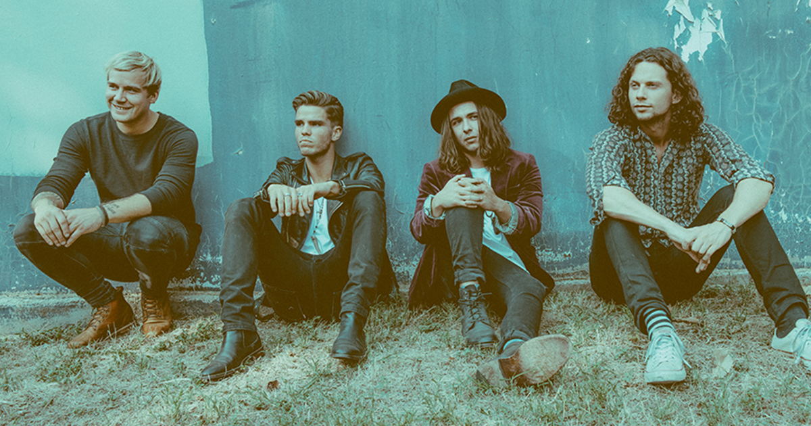
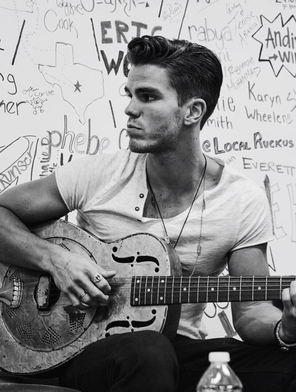
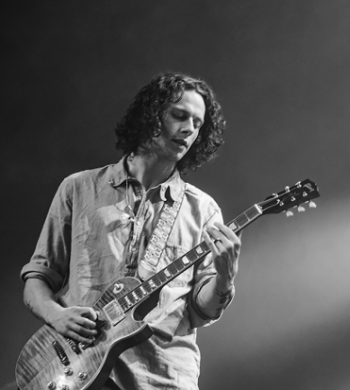
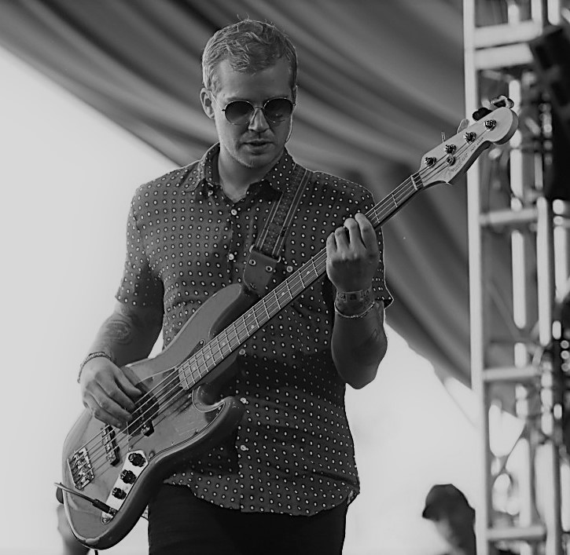
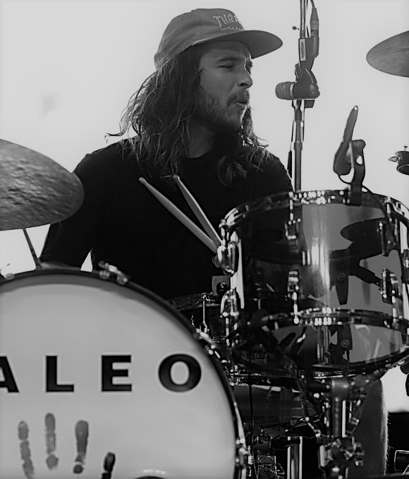

Kaleo is an Icelandic blues/rock band that formed at Mosfellsbær in 2012. It consists of lead vocalist and guitarist JJ Julius Son, drummer David Antonsson, bassist Daniel Kristjansson, and lead guitarist Rubin Pollock. They have released two studio albums, Kaleo (2013) and A/B (2016), as well as an EP, Glasshouse (2013). A/B has sold over 800,000 albums worldwide. One of the singles from A/B, "Way Down We Go", has been sold over 500,000 times in the US and reached #1 on the Billboard Alternative Chart on 20 August 2016. The group has made multiple appearances on late night television shows including Conan, Jimmy Kimmel Live!, and Late Night with Seth Meyers.Their songs have been heard on many other television shows including Orange is the New Black, Blindspot, Suits, Vinyl, Grey's Anatomy, Riverdale , Empire, The Leftovers, Frequency, Supergirl, Lucifer, Longmire, The Vampire Diaries, and Frontier.
The band members of the music group known as Kaleo are as follows; Jökull Júlíusson, Rubin Pollock, Davíð Antonsson and Daníel Ægir Kristjánsson
Their blues influences are mainly drawn from delta blues, which was the target for some of the heavier songs in their album A/B. Their music prominently features a distinctive resonator sound. The band is made up of: Jökull Júlíusson – lead vocals, rhythm guitar, piano, Rubin Pollock – lead guitar, backing vocals, Daniel Kristjansson – bass, keyboard, David Antonsson – drums, percussion, backing vocals.
Jökull Júlíusson
Rubin Pollock
Davíð Antonsson
Daníel Ægir Kristjánsson